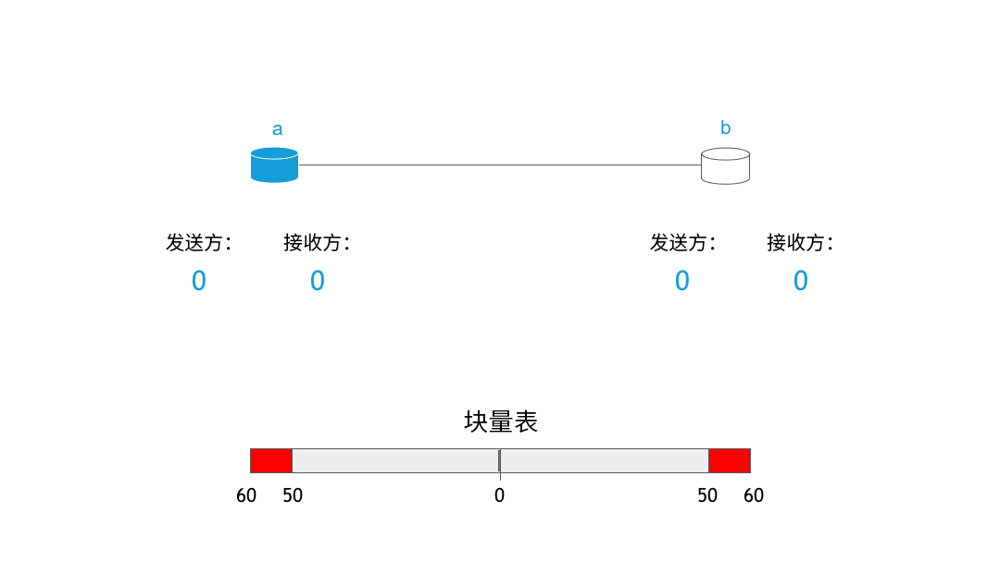

RIF 存储：第一组块
Vojtěch Šimetka & Rinke Hendriksen2019年7月1日
数周前，我们发布了有关去中心化存储的首篇文章，在这篇文章中我们强调了构建该功能的动机以及我们的愿景。自那时起，发生了很多事情。例如，我们确定了 MVP 的范围，回答了一些关键问题，并与 Ethereum Swarm 团队建立了合作伙伴关系，以助力实现该愿景。这种合作伙伴关系具有重大意义：它在同时运行 Swarm 与 RIF Storage 时，助力我们从其中最受重视的一个去中心化存储项目中汲取经验。
在此次博客发布中，我们将强调这种合作伙伴关系如何产生，随后我们将提供有关 RIF 存储功能如何运行的高阶概述。
合作的开始
从我们之前发布的博客中，您已了解到：去中心化存储对实现更为公允的社会而言十分重要。由于这点极为重要，因此并不奇怪许多项目都在努力实现这点，例如：IPFS, Storj, Sia, MaidSafe 或 Swarm。虽然所有这些项目存在一些重要差异，但有一个共同点，就是它们都在尝试改变全球资讯的存储和访问方式。很明显 RIF 拥有作为第 2 推动者的优势：我们所处的情况使我们能够了解到所有这些有趣的项目，以及它们的优势和弊端。而我们也的确这样做了。
通过该分析可知，对我们而言 Swarm 是最具前景的项目。它具有巧妙的设计和清晰的愿景；所有项目在部署激励型去中心化存储（下文将对这点进行更多说明）上都提供了非常清晰的路径。
几乎在同一时间，Swarm 组织了2019 马德里 Swarm 峰会。我们安排了 Vojtech Simetka 与 Ale Banzas 参加了此次峰会。我们的结论已得到确认，且我们对 Swarm 项目的状况有了更清晰的了解；虽然 Swarm 项目设计严密，并在理论对其进行了定义，但是除了核心存储功能，其他一些功能仍处于研究或试验阶段，例如激励机制。激励型去中心化存储在很大程度上取决于第 2 层级支付解决方案，这是由于小额支付对激励各节点以有益于网络的方式运行起着关键作用。由于我们的团队在第 2 层级支付解决方案（RIF 支付与 Lumino）上拥有丰富的经验，我们发现了与 Swarm 团队合作并实现 激励型存储愿景的机会。
因此，这种合作伙伴关系与激励追踪模式随之建立。这种追踪模式由来自 Swarm 的 Fabio Barone 负责操作，并由来自 RIF Storage 的 Vojtech Simetka 进行协调，其目的在于通过大量依靠 Swarm 团队完成的研究最大程度减少部署激励型数据存储（请参见：MVP 范围）。此外，其目的还在于在接下来 3 个月为本地 EVM 货币（如 RBTC 或 ETH）与 ERC20 代币（例如 RIF）提供支持。
RIF Storage 与 Swarm 相关基础知识
在这部分，我们将对去中心化存储（在这种情况中，例如 Swarm）如何运行、以及激励如何发挥作用提供高阶说明。如需了解完整说明，请参见官方 Swarm 文件。
用户预期去中心化存储提供的两个主要功能为上传和下载文件。我们先来说明一下如何进行上传。以下为我们确定的三个步骤：
- 将文件上传到一个节点
- 准备好文件（分块并加密
- 将各个块分配到网络中
第一个步骤简单明了：用户连接至一个运行的 Swarm 节点，并使用指令 swarm up

这些块被映射到 Merkle 树中，以构建完整性。以下图像显示了这种树可能具有的外观：

在这颗树中，叶子被每个块的散列所填充，而树根代表整个文件的散列。这些散列的使用方式有两种：作为校验和以确保块的完整性，以及显示它们 在网络中的位置。根据节点地址之间的 XOR 距离以及节点内容的散列对块进行分配。如利用示意图表示，它的情况大致如下：

大部分时候下载文件的流程遵循相同算法，不过以相反的顺序进行。用户通过网络中 Merkle 树的根散列来索取一个文件，之后索取各个节点的块（Merkle 树的叶子节点），对文件进行编译。最后，对各个块进行解密，然后对文件进行组合。
关于激励
如之前我们所讨论的，激励对网络而言非常重要，上文已对此进行了说明。为什么？思考一下您是否希望您的笔记本电脑每天保持联机并全天候启用，以切分各个块，将其存储在硬盘中，并从硬盘中提供这些块。不希望这样？额，或许并不是仅您会这样回答。请您自问另外一个问题：什么会使您愿意提供块，助力打造一个健康的网络？
Swarm 对 Swarm 计费协议 (SWAP) 进行定义，该协议为“针锋相对式”系统，节点对其索取和提供的数据量进行计算。其中的基本意思为假设您向我索取了一百万个块，我会相应归还给您一百万个块。不过，在文件存储网络中这存在一个问题。我们希望网络使用具有可变性（例如，我可能进行 2 小时视频串流，然后在接下来 4 小时期间让我的电脑闲置），以及节点功能存在差异（一部手机无法提供大量块，但一台服务器可以做到这一点）。SWAP 允许节点对其余额进行计算，如某个节点向您索取大量块，您将通过某个第二层支付解决方案向该节点出具一份付款申请单。

此处显示了 SWAP 机制，在该机制中节点相互发送和接收块，一旦块量表 (chunk-o-meter) 向一边倾斜得过多时，将对余额进行结算
虽然设计简单，但这种概念对去中心化网络而言非常有用。比特币和加密货币的兴起已说明，设计精良的结构可帮助节点以有利于网络健康的某些方式运行。在这种情况下，预期利润推动下的节点加入网络，并从高通量服务器提供最需要的块，这将提升网络的稳定性和速度，使其更难被破坏。这正是我们想要的！此外，这种系统也允许任何人免费进入 RSK/Ethereum 生态系统。
后续安排
正如您看到的，我们在积极地给您提供一些非常酷的前沿技术。您可以在激励板上追踪我们的进展情况。如果您是一名开发人员，您可通过选择一个 GitHub 问题并对邮费等方面进行一些研究来帮助我们，或最好您能联系我们，了解一下我们怎样进行合作。下次我们将向您展示 RIF 存储用户界面，让您先睹为快。